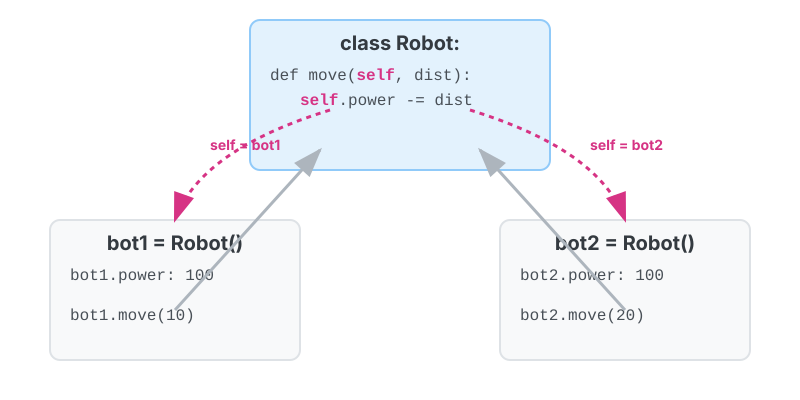

2주차: 클래스 기초 - 인스턴스와 self의 정체 ⚙️
지난 시간 배운 OOP 패러다임을 바탕으로, 이번 주에는 파이썬 클래스의 생성자와 속성, 그리고 메서드 선언 시 반드시 짚고 가야 할 self 매개변수의 진짜 비밀을 파헤쳐 봅니다.
학습목표
클래스 안의 가장 강력한 매직 코어이자 매개변수인 self의 정체를 통달합니다. 자바의 this 키워드와의 차이점을 이해하고, 왜 파이썬은 이토록 강박적으로 명시적인 self를 고집하는지 객체지향의 사상적 측면에서 파고듭니다.
💡 TL;DR (1분 핵심 요약): self란?
- self: 공장에서 찍혀 나온 무수한 인스턴스(객체)들 중에서, “지금 당장 행동을 취하고 있는 바로 그 ‘나 자신’“을 가리키는 파이썬의 거울입니다. 자바나 C++의
this와 동일한 역할을 합니다. - 명시적 선언: 파이썬에서는 클래스 내부의 일반 메서드를 선언할 때, 무조건 첫 번째 매개변수로
self를 적어 주어야만 합니다.
1. 파이썬 최대의 수수께끼: self가 도대체 뭔가요?
클래스 안의 모든 괄호마다 귀신처럼 맨 앞자리를 꿰차고 있는 매개변수 self. 그 정체는 바로 “공장에서 찍혀 나온 무수한 로봇 복제 인간들 중에서, 지금 당장 키보드 버튼을 눌러 행동하고 있는 바로 그 ‘나 자신(현재 인스턴스)’“을 의미하는 거울입니다.
(웹툰 비유: 거울을 바라보고 있는 로봇. 로봇의 가슴에는 ‘self’라는 빛나는 명찰이 붙어 있으며, 거울에 비친 자신의 모습(내부 배터리 잔량)을 들여다보고 있습니다. 아무리 수많은 로봇이 있어도, 이 로봇이 말하는 ‘self’는 오직 거울 앞의 ‘자기 자신’뿐입니다.)

예제: self를 통한 행동 반경 제어
메서드(클래스 안에 소속된 함수)를 정의할 때, 무조건 무조건 첫 번째 매개변수로 self를 강제해야 합니다.
class Robot:
def __init__(self, name):
self.name = name
self.power = 100 # 기본 배터리는 100% 충전
def say_hello(self): # 반드시 첫 파라미터는 self!
print(f"안녕하세요! 저는 {self.name}입니다. 잔여 배터리: {self.power}%")
def move(self, distance):
self.power -= distance # '나 자신'의 배터리 창고에서 값을 빼야 합니다!
print(f"위이잉~ {distance}m 이동완료. (현재 배터리: {self.power}%)")
# 로봇 조종 시작
bot = Robot("Wall-E")
bot.say_hello()
# 눈에 보이지 않지만, 파이썬은 내부적으로 bot.move(10) 을 Robot.move(bot, 10) 으로 변환해서
# 10m를 움직인 로봇이 'bot'이라는 것을 self 자리에 주입해 줍니다!!
bot.move(15)
bot.say_hello()
2. ☕ Java vs 🐍 Python 스나이퍼 비교
this vs self
- Java: 자바에서는 클래스 변수에 접근할 때 암시적으로
this.키워드를 깔아줍니다(이름 충돌이 나지 않는 한 생략 가능). 컴파일러가 알아서 현재 객체 자원을 연결해줍니다. - Python: 파이썬은 “명시적인 것이 암시적인 것보다 낫다”는 무서운 철학을 고집합니다. 절대 자동으로 숨겨주지 않고, 네가 남의 변수를 건드리는지 네 자신의 속성을 건드리는지 모조리
self.를 타이핑해서 육안상 명확히 구분하라고 혹독하게 강제합니다. (처음엔 귀찮아도 나중엔 버그를 막아주는 생명줄이 됩니다.)
코딩 영단어 학습 📝
- Self: 자아, 자신. (클래스라는 하나의 뼈대 안에서 활동하지만, 결국 조작되는 메모리는 각 독립적인 ‘인스턴스(객체)’입니다. 내가 쏘는 미사일이 남의 배터리를 닳게 하지 않도록, 온전히 나의 내면 상태(변수)를 가리킬 때 쓰는 지시대명사입니다.)
- This: 이것. (자바, C++, 자바스크립트 등 대다수 객체지향 언어에서 현재 인스턴스 자신을 가리키는 키워드입니다. 파이썬의
self와 근본적으로 하는 일이 같습니다.)
✍️ 이번 주 연습 문제
문제 1. 파이썬 클래스의 생성자 __init__ 메서드가 인스턴스를 생성하는 과정에서 어떤 역할을 하는지 설명해 보세요.
문제 2. 클래스 내부에 정의된 메서드의 첫 번째 매개변수로 왜 항상 self가 필요하며, 메서드가 호출될 때 파이썬은 이 self에 무엇을 바인딩해 주는지 설명해 보세요.
문제 3. (심화) 파이썬에서 BankAccount 클래스 인스턴스 my_account가 있을 때, my_account.deposit(100)과 BankAccount.deposit(my_account, 100)의 내부 바인딩 및 함수 호출 흐름상 차이점과 동일성을 논해 보세요.
📖 교재 상세 학습: 02 설계도(클래스)와 실제 건축물(인스턴스)
02 붕어빵 굽는 무쇠 틀(Class)과 갓 구워낸 붕어빵(Instance)
우리가 알게 모르게 숨 쉬듯 써왔던 [1, 2, 3] 같은 리스트 배열도, 사실 그 알맹이를 파헤쳐보면 파이썬 창조주가 태초에 깎아둔 list라는 거대한 ‘무쇠 틀(클래스)’에서 방금 하나 구워져 튀어나온 ‘따끈한 붕어빵 한 봉지(인스턴스)’에 불과합니다.
- 클래스 (Class): 물건을 찍어내기 위한 원본 설계도, 거푸집 (예: ‘자동차’라는 개념 자체)
- 인스턴스 (Instance): 설계도를 쥐고 공장에서 조립해 실제로 내 눈앞에 튀어나온 실물 (예: ‘내 차’, ‘아빠 차’, ‘어제 뽑은 테슬라’)
02.1 객체(Object)가 가져야 할 3대 특징
프로그래밍에서 복잡한 시스템을 구축하기 위해서는 숫자나 문자열 같은 단순 데이터를 넘어, ‘상태(속성)’와 ‘행동(메서드)’을 하나로 묶은 독립적인 생명체인 객체(Object)를 만들어내야 합니다. 완벽한 객체라면 다음 세 가지 특성을 가집니다.
- 정체성 (Identity): 모든 객체는 고유한 메모리 주소(레퍼런스)를 가집니다. 완전히 똑같은 통장(데이터)이라도, 내 통장과 네 통장은 다른 존재입니다.
- 상태 (State): 객체는 자신만의 고유한 정보를 품고 있습니다. (예: 붕어빵의 ‘앙금 종류’, ‘온도’)
- 행동 (Behavior): 외부의 명령(호출)을 받았을 때 스스로 반응하는 행동 지침(메서드)을 갖춥니다.
REPL 실습 창: == 연산자와 is 연산자의 소름 돋는 차이 (정체성 확인)
>>> item_a = [1, 2, 3]
>>> item_b = [1, 2, 3]
>>> item_a == item_b
True # 둘의 뱃속에 든 값(내용물) 구성이 완전히 똑같다는 겉모습 판별입니다. (어쨌든 둘 다 팥 붕어빵이네!)
>>> item_a is item_b
False # 허나 물리적인 영혼(메모리 주소)까지 완벽히 일치하는 단일 개체는 아닙니다! 파이썬의 id() 함수로 확인해보면 번호표가 다릅니다.
02.2 만물의 조물주: object 클래스
여담으로, 파이썬 객체 생태계 피라미드의 맨 꼭대기에는 object 라는 절대자가 존재합니다. 파이썬 세상의 모든 클래스(수치, 문자열은 물론 우리가 직접 만든 사용자 정의 클래스까지)는 족보를 거슬러 올라가면 시조새 격인 object 클래스를 강제로 물려받고 있습니다. 이 덕분에 어떤 객체든 최소한의 공통 기능들을 숨쉬듯 사용할 수 있습니다.
📖 교재 상세 학습: 03 생명력을 불어넣는 행동 지침서: 메서드(Method)
03 스스로 생각하고 움직이게 하라: 메서드(Method)
클래스라는 도화지 위에는 이름이나 체력 같은 정적인 테이터(변수)뿐만 아니라, 살아 움직이는 행동 패턴(함수)도 얼마든지 스케치할 수 있습니다. 이렇게 클래스 내부 생태계에 철석같이 소속되어 특수 임무를 띠는 함수들을 우리는 일반 함수와 구분 지어 메서드(Method)라고 칭합니다.
클래스 내부에 나만의 메서드를 창조할 때 절대 까먹으면 안 되는 단 하나의 황금률이 있습니다. 무조건 첫 번째 매개변수 구멍에는 self라는 마법의 단어를 박아 넣는다!
이 self는 “현재 생명을 얻어 활동 중인 나 자신(인스턴스)”을 직통으로 가리킵니다. “내 체력(self.health)을 깎아내라”, “내 이름표(self.name)를 자랑스럽게 외쳐라” 하고 본인에게 명령을 내릴 때 빠져선 안 될 가장 중요한 주어(Subject)입니다.
코드: 샌드백이 된 불쌍한 몬스터
class GameMonster():
# 클래스 내부에 서식하는 함수(메서드)는 언제나 첫 빠따로 self를 챙겨가야 합니다.
def receive_strike(self, damage_amount):
self.health = self.health - damage_amount
print(f"크윽! {self.name}(이)가 {damage_amount}만큼의 뼈아픈 일격을 당했습니다! (잔여 체력: {self.health})")
# 몬스터 스폰
orc_warrior = GameMonster()
orc_warrior.name = "성난 오크 전사"
orc_warrior.health = 200
# 개발자인 우리가 receive_strike 메서드를 호출할 땐 순수 데미지 수치(50)만 입에 넣어주면 됩니다.
# 맨 앞자리를 떡하니 차지했던 self 변수에는 파이썬 엔진이 센스 있게 'orc_warrior' 본체를 몰래 욱여넣어 줍니다.
orc_warrior.receive_strike(50)
orc_warrior.receive_strike(100)
콘솔 출력창
크윽! 성난 오크 전사(이)가 50만큼의 뼈아픈 일격을 당했습니다! (잔여 체력: 150)
크윽! 성난 오크 전사(이)가 100만큼의 뼈아픈 일격을 당했습니다! (잔여 체력: 50)
📖 교재 상세 학습: 04 너의 출신 성분이 무엇이냐? 자료형 검사기
04 데이터의 호구조사를 실시하다: 타입(Type) 검열기
파이썬이 지배하는 세계관에서는 굴러다니는 모든 데이터가 저마다 고유한 ‘종족(자료형, Class Type)’ 소속 마크를 이마에 달고 있습니다.
예를 들어 숫자 10과 따옴표를 두른 "10"은 인간의 눈으로 보기엔 별반 다를 게 없지만, 파이썬 호스트 입장에선 서로 말도 안 통하는 완전히 딴판인 종족입니다.
type(타깃값): 해당 데이터 조각이 정확히 어느 가문(클래스) 출신인지 그 본래 신분을 적나라하게 까발려줍니다.isinstance(타깃값, 검사할자료형): 타깃 데이터가 우리가 의심하는 그 소속이 맞는지 아닌지를 단호하게 O/X(True/False)로 심사해 주는 판독기입니다.
REPL 실습 창: 삼엄한 신분 확인 절차
>>> type("안녕하세요")
<class 'str'> # 얘는 뼛속까지 텍스트(string) 종족이라는 뜻입니다.
>>> type(3.1415)
<class 'float'> # 아하, 얘는 소수점이 달린 부동소수점(float) 일족이군요.
>>> isinstance(999, int)
True # 맞습니다! 999는 순혈 정수(int) 가문이 확실합니다.
>>> isinstance(999, float)
False # 땡! 999는 소수 나부랭이가 아닙니다! (999.0 이어야 소수 취급을 받습니다.)
📖 교재 상세 학습: 2. 생성자(new)와 초기화(init)
2. 생성자(__new__)와 초기화(__init__)
파이썬에서 흔히 __init__을 ‘생성자’라고 부르지만, 엄밀한 파이썬의 구조적 관점에서는 이는 초기화(Initializer) 메서드일 뿐입니다. 진짜 객체를 메모리에 탄생시키는 창조주 역할은 __new__라는 생성자(Constructor) 스페셜 메서드가 담당합니다.
2.1 진정한 창조주: __new__ 메서드
우리가 Book("파이썬") 형식으로 클래스 이름표를 호출할 때, 사실 파이썬 내부에서는 가장 먼저 __new__ 메서드가 발동됩니다.
이 메서드는 메모리 상에 아무것도 칠해지지 않은 텅 빈 인스턴스(객체)를 만들어서 반환하는 역할을 합니다.
class Alien:
# 인스턴스 객체를 메모리에 생성하는 진짜 '생성자'
# 첫 번째 매개변수로 클래스 자기 자신(cls)을 받습니다.
def __new__(cls, *args, **kwargs):
print("1. __new__ 호출: 텅 빈 인스턴스를 메모리에 창조합니다.")
# 부모인 object 클래스의 __new__를 빌려와 객체를 실체화함
instance = super().__new__(cls)
return instance
# 생성된 인스턴스에 값을 채워넣는 '초기화' 메서드
def __init__(self, name):
print("2. __init__ 호출: 생성된 인스턴스에 이름을 부여합니다.")
self.name = name
# 객체 생성 과정
alien1 = Alien("외계인 A")
[!NOTE] 일반적인 프로그래밍에서는
__new__를 직접 건드릴 일이 거의 없습니다. 하지만 싱글턴 패턴(Singletion Pattern)처럼 메모리에 단 하나의 객체만 존재하도록 객체 생성을 통제해야 할 때는__new__를 오버라이딩하여 제어합니다.
2.2 인스턴스 변수 세팅: __init__ 메서드
__new__가 텅 빈 인스턴스를 반환하면, 파이썬은 즉시 그 반환된 인스턴스를 파라미터 self 자리에 담아 __init__ 메서드로 넘겨줍니다.
여기서 비로소 인스턴스만의 고유한 속성(이름, 나이 등)을 딕셔너리(__dict__) 네임스페이스에 채워 넣게 됩니다.
class Robot:
def __init__(self, model_num):
# 각각의 로봇(self)은 자기만의 고유한 모델 번호를 가집니다.
self.model_num = model_num
self.battery = 100 # 기본값 세팅
robotX = Robot("X-99")
print(robotX.__dict__) # {'model_num': 'X-99', 'battery': 100}
2.3 객체의 최후: 소멸자 __del__
객체의 임무가 끝나고 메모리에서 사라질 때(가비지 컬렉터에 의해 수거될 때) 마지막 유언을 남기듯 실행되는 메서드가 바로 소멸자 __del__ 입니다.
class ServerConnection:
def __init__(self, ip):
self.ip = ip
print(f"[{self.ip}] 서버에 연결을 시작합니다.")
# 객체가 파괴될 때 자동으로 실행됨
def __del__(self):
print(f"[{self.ip}] 안전하게 연결을 종료하고 메모리를 해제합니다.")
# 연결 객체 생성
conn = ServerConnection("192.168.0.1")
# 연결 객체를 명시적으로 파괴 (또는 프로그램이 끝날 때 자동 파괴됨)
del conn
# 출력: [192.168.0.1] 안전하게 연결을 종료하고 메모리를 해제합니다.
2.4 메모리 다이어트: __slots__
파이썬의 각 인스턴스는 자유롭게 속성을 무한히 추가할 수 있도록 내부에 __dict__라는 해시 테이블을 몰래 들고 다닙니다. 이로 인해 클래스가 굉장히 유연해지지만, 객체를 수십만 개씩 만들어야 할 때는 메모리 소모가 극심해집니다.
이때, 클래스에 __slots__ 리스트를 선언하면 거대한 __dict__ 대신 속성의 자리를 미리 고정시켜 메모리 사용량을 획기적으로 줄일 수 있습니다.
class MemoryEfficientPoint:
# 이 인스턴스는 오직 x, y 속성만을 가질 수 있다고 족쇄를 채움!
__slots__ = ['x', 'y']
def __init__(self, x, y):
self.x = x
self.y = y
point = MemoryEfficientPoint(10, 20)
# [에러 발생] __slots__에 정의되지 않은 새로운 속성을 몰래 추가할 수 없음!
# point.z = 30
📖 교재 상세 학습: 3. 객체의 생명주기와 소멸자
3. 객체의 점(Dot) 연산과 속성 제어
파이썬에서 클래스나 인스턴스의 내부 깊숙한 곳(네임스페이스)에 접근할 수 있는 유일한 열쇠는 바로 점(.) 연산자입니다. 우리가 무심코 사용하는 p.name이나 p.age = 20 같은 점 연산의 이면에는 파이썬의 정교한 스페셜 메서드 체계가 숨쉬고 있습니다.
3.1 점(.) 연산의 숨겨진 호출 구조
점(.)을 찍어 인스턴스의 속성에 접근하거나 값을 바꿀 때, 파이썬 내부에서는 다음과 같이 3개의 스페셜 메서드가 보이지 않게 작동합니다.
- 조회:
__getattribute__(가장 먼저 접근 시도) - 조회 실패 시 위임:
__getattr__(__getattribute__에서 못 찾을 때만 호출됨) - 할당/갱신:
__setattr__ - 삭제:
__delattr__
3.2 속성 갱신의 통로: __setattr__
인스턴스에 새로운 값을 할당할 때마다 항상 __setattr__ 스페셜 메서드가 가로채기(Intercept)를 수행합니다. 이를 응용하면 데이터베이스에 값을 쓰거나, 특정 값이 들어올 때 타입 검사를 강제할 수 있습니다.
class SmartDevice:
def __init__(self, name):
# self.name = name 을 실행하는 순간 __setattr__ 이 발동됨!
self.name = name
# 속성 할당을 중간에 가로채는 스페셜 메서드
def __setattr__(self, key, value):
print(f"[시스템 로그] '{key}' 속성에 '{value}' 값을 저장합니다.")
# 무한루프를 방지하기 위해 실제 딕셔너리에 직접 값을 밀어넣음
self.__dict__[key] = value
device = SmartDevice("온도조절기")
# [시스템 로그] 'name' 속성에 '온도조절기' 값을 저장합니다.
device.status = "활성화"
# [시스템 로그] 'status' 속성에 '활성화' 값을 저장합니다.
3.3 우아하게 에러 피하기: __getattr__
일반적으로 객체에 정의되지 않은 속성을 점(.)으로 호출하면 자비 없이 AttributeError가 발생합니다. 하지만 __getattr__ 메서드를 재정의해두면, 찾는 속성이 없을 때 최후의 보루로 이 메서드가 실행되어 에러를 방지하고 기본값을 던져줄 수 있습니다.
class UserProfile:
def __init__(self, id, name):
self.id = id
self.name = name
# 파이썬이 네임스페이스를 완전히 뒤져보고 그래도 없을 때만 호출됨
def __getattr__(self, missing_attr):
print(f"[경고] '{missing_attr}' 이라는 속성은 존재하지 않습니다.")
return "Not Found"
# 1. 속성이 정상적으로 존재할 때 (__getattribute__ 정상 작동)
user = UserProfile(101, "제임스")
print(user.name) # 제임스
# 2. 존재하지 않는 속성을 찾을 때 (에러 대신 __getattr__ 가 막아줌)
print(user.email)
# [경고] 'email' 이라는 속성은 존재하지 않습니다.
# Not Found
[!CAUTION] 무리하게
__getattribute__를 가로채려는 시도는 재귀(무한 루프) 함정에 빠지기 십상입니다. 안전하게 처리하려면 가급적__getattr__을 사용하는 패턴을 추천합니다.
📖 교재 상세 학습: 4. 메서드의 종류 (인스턴스, 정적, 클래스)
4. 메서드의 종류 (인스턴스, 정적, 클래스)
파이썬의 클래스 내부에는 인스턴스의 데이터를 볶고 지지는 함수들이 존재합니다. 이것들을 흔히 메서드(Method)라고 부릅니다. 어떤 주체(인스턴스냐, 클래스 껍데기냐)가 이 메서드를 다루느냐에 따라 파이썬은 인스턴스 메서드, 클래스 메서드, 정적 메서드 세 가지 종류로 구분하여 지원합니다.
4.1 가장 흔한 일꾼: 인스턴스 메서드 (Instance Method)
우리가 파이썬에서 밥 먹듯이 쓰게 될 가장 기본적인 형태의 메서드입니다.
인스턴스가 생성되고 나면, 그 인스턴스 고유의 데이터(상태)를 지지고 볶는 역할을 합니다. 파이썬 문법상 첫 번째 매개변수로 항상 자기 자신을 뜻하는 self를 무조건 넘겨받아야 합니다.
class Robot:
def __init__(self, name):
self.name = name
# 1. 인스턴스 메서드 정의 (첫 번째 인자는 무조건 self)
def say_hello(self):
print(f"삐리릭. 내 이름은 {self.name} 입니다.")
r1 = Robot("R2D2")
# 호출 시, 파이썬이 내부적으로 r1 인스턴스를 self 자리에 몰래 끼워넣습니다.
r1.say_hello() # 삐리릭. 내 이름은 R2D2 입니다.
4.2 클래스의 대표자: 클래스 메서드 (Class Method)
인스턴스 개별 데이터가 아니라, ‘클래스 전체를 아우르는 공통 데이터(클래스 변수)’를 조작하고 싶을 때 사용합니다.
메서드 머리통 위에 @classmethod라는 훈장(데코레이터)을 달아주며, 첫 번째 파라미터로는 인스턴스(self)가 아니라 클래스 껍데기 자체(cls)를 넘겨받습니다.
class Employee:
# 모든 직원이 공유하는 클래스 변수 (사원수)
total_count = 0
# 2. 클래스 메서드 정의 (첫 번째 인자는 무조건 cls)
@classmethod
def print_company_size(cls):
print(f"현재 우리 회사의 총 사원수는 {cls.total_count} 명입니다.")
# 인스턴스를 안 만들고도, 곧바로 '클래스명'으로 메서드 호출이 가능합니다!
Employee.print_company_size()
4.3 독립적인 늑대: 정적 메서드 (Static Method)
클래스 안에 둥지를 틀고 있기는 하지만, 클래스 변수(cls)나 인스턴스 변수(self) 그 어느 것도 건드리지 않는 완벽히 독립적인 함수입니다.
머리통에 @staticmethod 훈장을 달아주며, 파라미터에 self나 cls 같은 까다로운 요구사항이 아예 없습니다. 보통 단순 계산이나 보조 유틸리티성 로직을 끼워넣을 때 씁니다.
class MathUtils:
# 3. 정적 메서드 정의 (self, cls 둘 다 필요 없는 순수 계산용 함수)
@staticmethod
def add(a, b):
return a + b
# 단순히 클래스라는 'namespace(이름 공간)' 역할만 빌려 쓰는 셈입니다.
result = MathUtils.add(10, 20)
print(result) # 30
4.4 보너스: 플루언트 인터페이스 (메서드 체이닝)
인스턴스 메서드의 마지막 꼬리 부분(return 문)에 self를 반환하도록 설계하면, 물 흐르듯이 메서드를 꼬리에 꼬리를 물고 연속으로 부르는 마법이 가능해집니다. 이를 흔히 메서드 체이닝(Method Chaining) 패턴이라고 부릅니다.
class TextBuilder:
def __init__(self, text=""):
self.text = text
def bold(self):
self.text = f"**{self.text}**"
# 나 자신(self)을 고스란히 던져줍니다!
return self
def italic(self):
self.text = f"_{self.text}_"
# 또 나 자신(self)을 던져줍니다!
return self
# 꼬리에 꼬리를 무는 기차놀이(Chaining) 방식의 호출
doc = TextBuilder("파이썬").bold().italic()
print(doc.text) # _**파이썬**_